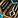
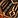
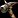
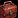
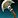
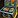
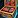
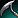
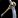
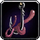

This guide covers where to get profession gear, how to pick the best stats, and who crafts what. The new profession gear system can be a bit confusing at first, so this guide is here to make it easier to understand.
What does profession gear do?
Tools and accessories give small stat bonuses that help you craft higher-quality items, save reagents, or gather more materials faster.
You can equip 1 tool and up to 2 accessories. These give bonuses to the following stats:
- Skill - Increases craft quality or the chance to gather higher-quality materials
- Ingenuity - Chance to refund some of the Concentration spent on a craft
- Multicraft - Chance to create extra items
- Resourcefulness - Chance to use fewer reagents
- Crafting Speed - Reduces the time it takes to complete a craft
- Finesse - Increases the amount of gathered materials
- Perception - Increases the chance of finding rare materials while gathering
- Deftness - Speeds up gathering time
Customizing Profession Tool Stats with Optional Reagents
You can customize the secondary stat of your profession tools when crafting them by using optional reagents. This allows you to tailor your tools for your preferred crafting goals.
Optional Reagents for Stats
Use one of the following reagents when crafting a tool to select its secondary stat:
 Algari Missive of Deftness
Algari Missive of Deftness Algari Missive of Multicraft
Algari Missive of Multicraft Algari Missive of Finesse
Algari Missive of Finesse Algari Missive of Crafting Speed
Algari Missive of Crafting Speed Algari Missive of Ingenuity
Algari Missive of Ingenuity Algari Missive of Perception
Algari Missive of Perception Algari Missive of Resourcefulness
Algari Missive of Resourcefulness
Tool Enchants
You can also enchant your tool to boost its secondary stat even further. These enchants are crafted by Enchanters:
Best Stat for Your Profession Tool
As a general rule, if the item you're crafting benefits from Multicraft, go with Multicraft. If it doesn't, use Resourcefulness or Ingenuity instead. Ingenuity only helps when using Concentration, so if you're not doing that, it's basically useless. In most cases where Multicraft doesn't work, Resourcefulness is the better choice.
Crafting Professions
If you craft different item types often (like gear and consumables), you can make multiple tools with different stats and swap them as needed.
| Tool Stat | Enchant | Best For |
|---|---|---|
| Multicraft | Resourcefulness | Crafting reagents and consumables |
| Resourcefulness | Resourcefulness | Armors, weapons, Crafting Orders and enchants where Multicraft has no effect |
| Ingenuity | Ingenuity | Crafting with Concentration on items that don't benefit from Multicraft. Mostly useful for Enchanting. |
Gathering Professions
Use a tool with Finesse and enchant it with a Finesse enchant to get the most materials. Finesse is the best stat for Herbalism, Mining, and Skinning.
How to Get Profession Gear
Profession tools and accessories are crafted by other professions.
- Uncommon (green) gear: You can craft it yourself if your profession supports it, but it's usually easier to just buy max-quality ones from the Auction House.
- Rare (blue) gear: These are soulbound and must be crafted through the Crafting Order system. You can't buy them directly on the Auction House.
Green vs Blue Profession Gear
There are two quality levels of profession equipment: Uncommon (green) and Rare (blue).
- Green gear is easier to get and can be crafted by yourself or bought on the Auction House. It's fine for leveling or casual use.
- Blue gear has higher stats and gives more extra skill. These are soulbound and must be crafted through the Crafting Order system or by someone with the same profession.
When Should You Get Blue Gear?
If you're only leveling or doing low-tier crafts, green gear is enough. But if you want to make high-quality items, complete public orders, or push skill limits, it's better to get blue gear early. The stats make a noticeable difference on difficult crafts.
Can You Upgrade or Change Stats Later?
Yes. Blue profession gear can be recrafted later to improve its item quality or swap the optional stat missive.
Full Equipment List by Profession
This section lists every tool and accessory by profession, along with who crafts them. Both green and blue versions are crafted by the same profession.
 Alchemy
Alchemy
| Slot | Crafted by | Green | Blue |
|---|---|---|---|
| Accessory 1 | Tailoring | ||
| Accessory 2 | Leatherworking | ||
| Tool | Inscription |
 Blacksmithing
Blacksmithing
| Slot | Crafted by | Green | Blue |
|---|---|---|---|
| Accessory 1 | Blacksmithing |  Proficient Blacksmith's Toolbox |
 Artisan Blacksmith's Toolbox |
| Accessory 2 | Leatherworking | ||
| Tool | Blacksmithing |  Proficient Blacksmith's Hammer |
Artisan Blacksmith's Hammer |
 Enchanting
Enchanting
| Slot | Crafted by | Green | Blue / Epic |
|---|---|---|---|
| Accessory 1 | Tailoring | ||
| Accessory 2 | Jewelcrafting | Incanter's Shard | Enchanter's Crystal |
| Tool | Enchanting | Runed Bismuth Rod | Runed Null Stone Rod |
Enchanting is the only profession that can craft an epic-quality tool instead of just a rare one. Since it only costs 100 more Artisan's Acuity, I recommend skipping the Runed Ironclaw Rod and going straight for the epic version. Crafting the blue one would just waste 300 Artisan's Acuity. It's better to save up a bit more and make the epic one for 400.
Note: The epic one doesn't give more skill, but gives more secondary stat.
 Engineering
Engineering
| Slot | Crafted by | Green | Blue |
|---|---|---|---|
| Accessory 1 | Engineering | ||
| Accessory 2 | Leatherworking | ||
| Tool | Engineering |
 Inscription
Inscription
| Slot | Crafted by | Green | Blue |
|---|---|---|---|
| Accessory 1 | Jewelcrafting | ||
| Accessory 2 | Jewelcrafting | Right-Handed Magnifying Glass | Forger's Font Inspector |
| Tool | Inscription |
 Jewelcrafting
Jewelcrafting
| Slot | Crafted by | Green | Blue |
|---|---|---|---|
| Accessory 1 | Jewelcrafting | Radiant Loupes | Extravagant Loupes |
| Accessory 2 | Leatherworking | ||
| Tool | Engineering |
 Leatherworking
Leatherworking
| Slot | Crafted by | Green | Blue |
|---|---|---|---|
| Accessory 1 | Blacksmithing |  Proficient Leatherworker's Toolset |
Artisan Leatherworker's Toolset |
| Accessory 2 | Leatherworking | ||
| Tool | Blacksmithing |  Proficient Leatherworker's Knife |
Artisan Leatherworker's Knife |
 Tailoring
Tailoring
| Slot | Crafted by | Green | Blue |
|---|---|---|---|
| Accessory 1 | Blacksmithing |  Proficient Needle Set |
 Artisan Needle Set |
| Accessory 2 | Tailoring | ||
| Tool | Engineering |
 Herbalism
Herbalism
| Slot | Crafted by | Green | Blue |
|---|---|---|---|
| Accessory 1 | Tailoring | ||
| Accessory 2 | Leatherworking | ||
| Tool | Blacksmithing | Proficient Sickle |  Artisan Sickle |
 Mining
Mining
| Slot | Crafted by | Green | Blue |
|---|---|---|---|
| Accessory 1 | Engineering | ||
| Accessory 2 | Engineering | ||
| Tool | Blacksmithing |  Proficient Pickaxe |
Artisan Pickaxe |
 Skinning
Skinning
| Slot | Crafted by | Green | Blue |
|---|---|---|---|
| Accessory 1 | Leatherworking | ||
| Accessory 2 | Leatherworking | ||
| Tool | Blacksmithing | Proficient Skinning Knife | Artisan Skinning Knife |
Cooking
| Slot | Crafted by | Green | Blue |
|---|---|---|---|
| Accessory | Tailoring | ||
| Tool | Inscription |

Fishing| Slot | Crafted by | Green | Blue |
|---|---|---|---|
| Accessory | Tailoring | ||
| Tool | Engineering | Bismuth Fisherfriend | Aqirite Fisherfriend |